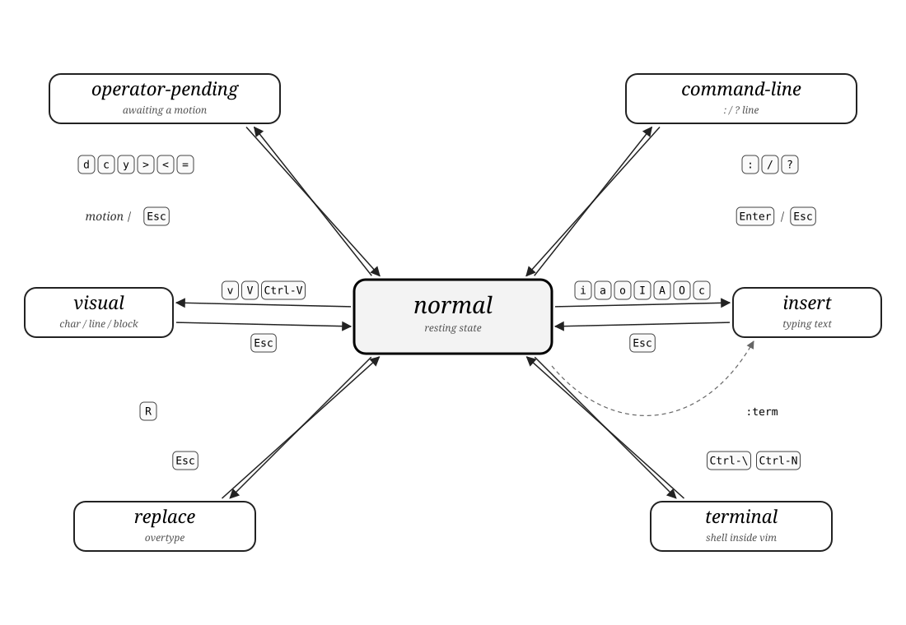

The Modes
A small finite state machine you carry in your head
Normal, insert, visual, replace, command-line, operator-pending, terminal. What each is for and how to move between them.
Vim has seven modes. You will spend essentially all your time in two of them — normal and insert. The other five matter for specific jobs. Knowing they exist, and how the transitions work, is more important than memorizing every command in each.
| Mode | Status line | What it's for |
|---|---|---|
| normal | (empty) | The default. Keys are commands. |
| insert | -- INSERT -- |
Keys type text. |
| visual | -- VISUAL -- / -- V-LINE -- / -- V-BLOCK -- |
Select text, then act on it. |
| replace | -- REPLACE -- |
Overtype existing characters. |
| command-line | shows typed : / / / ? |
Run an Ex command or search. |
| operator-pending | (empty, but last key was an operator) | Waiting for a motion or text object. |
| terminal | -- TERMINAL -- |
An interactive shell inside Vim. |
Getting Out
From any mode except normal mode, Esc returns to normal mode. From insert and visual mode, Ctrl-[ does the same. Build the Esc reflex: after every thought, escape.
Terminal mode is the exception — Esc is forwarded to the shell. Use Ctrl-\Ctrl-N to escape from a Vim terminal.
Operator-pending: the secret seventh mode
When you press an operator like d, c, y, or >, Vim enters operator-pending mode and waits for a motion or text object. You're in normal mode no longer — keys do different things in this state. i no longer enters insert mode; it begins a text object (inner ...). a no longer appends; it begins around-text-objects. The operator and motion together form a single change, which is what . repeats.
| Key | Note |
|---|---|
| d | |
| i | |
| w |
The State Machine, Drawn

Why this matters
When something surprises you in Vim — a key doesn't do what you expected — nine times out of ten you misjudged the current mode. "I pressed dd and it just typed two ds" → you were in insert mode. "I pressed i and a word disappeared" → you were in operator-pending mode after d. The fix is always the same: press Esc (sometimes twice) and start over from normal mode.
Worked example — normal mode → insert mode → normal mode
The mode transition every editing change goes through.

When you open a file, you start in normal mode. Keystrokes are commands.
, vim — insert mode, text added.
i enters insert mode at the cursor; subsequent keys produce text. The status line below advertises the mode.

Esc commits the insert and returns to normal mode. The whole insertion is one undoable change.
Watch
See also: Modal Editing, The Universal Grammar, The Three Visual Modes, Replace Mode, One-Shot Normal Mode